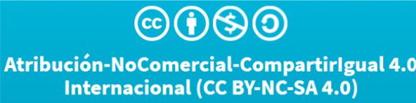

Alumna:
Ximena Anahí Hernádez Juárez
Pamela Carolina Reyes Ambrocio
Elienay Texcahua Sanchez
Semestre: Cuatro
Grupo: A
Asignatura: Formación Laboral Básica: TIC
El trabajo se protege bajo la licencia Creative Commons que se muestra a continuacion:

Considerando lo anterior, usted es libre de:
- Compartir - copiar y redistribuir el material en cualquier medio o
formato.
- Adaptar - remezclar, transformar y construir a partir del material.
- La licenciante no puede revocar estas libertades en tanto usted siga los
términos de la licencia.
Bajo los siguientes términos:
- Atribución - Usted debe dar crédito de manera adecuada, brindar un
enlace a la licencia, e indicar si se han realizado cambios. Puede hacerlo
en cualquier forma razonable, pero no de forma tal que sugiera que
usted o su uso tienen el apoyo de la licenciante.
- No Comercial - Usted no puede hacer uso del material con propósitos
comerciales.
- Compartir Igual - Si remezcla, transforma o crea a partir del material,
debe distribuir su contribución bajo la misma licencia del original.
- No hay restricciones adicionales - No puede aplicar términos legales ni
medidas tecnológicas que restrinjan legalmente a otras a hacer
cualquier uso permitido.
Esta página está licenciada bajo
CC BY 4.0.